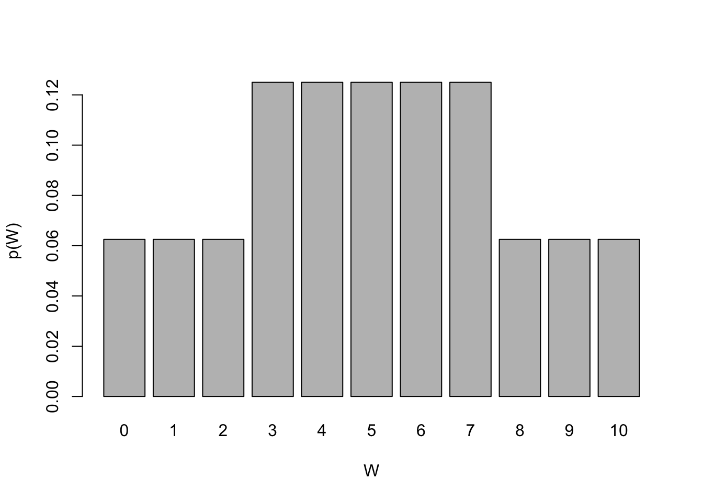

Code
# load libraries
library(tidyverse)
library(magrittr)
library(kableExtra)for a median
# load libraries
library(tidyverse)
library(magrittr)
library(kableExtra)Named after Frank Wilcoxon (1892–1945), Wilcoxon signed rank test was one of the first “non-parametric” methods developed. It can be used to:
Example 2.1 (Wilcoxon signed rank test (for a median)) Let’s imagine we are a part of team analyzing results of a placebo-controlled clinical trial to test the effectiveness of a sleeping drug. We have collected data on 10 patients when they took a sleeping drug and when they took a placebo.
The hours of sleep recorded for each study participant:
# input data
data.sleep <- data.frame(id = 1:10,
drug = c(6.1, 6.0, 8.2, 7.6, 6.5, 5.4, 6.9, 6.7, 7.4, 5.8),
placebo = c(5.2, 7.9, 3.9, 4.7, 5.3, 7.4, 4.2, 6.1, 3.8, 7.3))
print(data.sleep) id drug placebo
1 1 6.1 5.2
2 2 6.0 7.9
3 3 8.2 3.9
4 4 7.6 4.7
5 5 6.5 5.3
6 6 5.4 7.4
7 7 6.9 4.2
8 8 6.7 6.1
9 9 7.4 3.8
10 10 5.8 7.3Before we investigate the effect of drug, a senior statistician ask us:
“Is the median sleeping time without taking the drug significantly less than the recommended 7 h of sleep?”
\(H_0: m = m_0\) the median sleeping time is equal to \(m_0\), \(m_0 = 7\) h
\(H_1 < m_0\) the median sleeping time is less than \(m_0\), \(m_0 = 7\) h
\[\begin{equation} Z_i = \left\{ \begin{array}{cc} 0 & \mathrm{if\ } X_i - m_0 < 0 \\ 1 & otherwise \\ \end{array} \right. \end{equation}\]
m0 <- 7
data.wilcoxon <- data.sleep %>%
select(!drug) %>% # remove drug data for now
rename(x = placebo) %>% # rename placebo column to x so it is easier to type and follow eq
mutate(`x-m0` = x - 7) %>% # subtract m0
mutate(`abs(x-m0)` = abs(`x-m0`)) %>% # take absolute value
mutate(R = rank(`abs(x-m0)`)) %>% # rank
mutate(Z = ifelse(`x-m0` < 0, 0, 1)) %>% # define indicator variable Z
mutate(ZR = R*Z) # calculate ranks R times Z
# print the table
data.wilcoxon %>%
kable() %>% kable_styling(full_width = FALSE)| id | x | x-m0 | abs(x-m0) | R | Z | ZR |
|---|---|---|---|---|---|---|
| 1 | 5.2 | -1.8 | 1.8 | 6.0 | 0 | 0.0 |
| 2 | 7.9 | 0.9 | 0.9 | 3.5 | 1 | 3.5 |
| 3 | 3.9 | -3.1 | 3.1 | 9.0 | 0 | 0.0 |
| 4 | 4.7 | -2.3 | 2.3 | 7.0 | 0 | 0.0 |
| 5 | 5.3 | -1.7 | 1.7 | 5.0 | 0 | 0.0 |
| 6 | 7.4 | 0.4 | 0.4 | 2.0 | 1 | 2.0 |
| 7 | 4.2 | -2.8 | 2.8 | 8.0 | 0 | 0.0 |
| 8 | 6.1 | -0.9 | 0.9 | 3.5 | 0 | 0.0 |
| 9 | 3.8 | -3.2 | 3.2 | 10.0 | 0 | 0.0 |
| 10 | 7.3 | 0.3 | 0.3 | 1.0 | 1 | 1.0 |
We can now calculate \(W\) following equation Equation 2.1 and we get:
# sum up the ranks multiplied by Z indicator value
W <- data.wilcoxon$ZR %>% sum()
print(W)[1] 6.5We got \(W = 6.5\) and now we need to calculate the P-value associated with \(W\) to be able to make decision about rejecting the null hypothesis. We refer to a statistical table “Upper and Lower Percentiles of the Wilcoxon Signed Rank Test, W” that can be found online or here.
For sample size \(n=10\) we can see that probability of observing \(W \le 3\) or \(W \ge 52\) is small, 0.005. Probability of observing \(W \le 4\) or \(W \ge 51\) is 0.007, still small but slightly larger. While we are getting towards the middle of the distribution the probability of observing \(W\) is getting larger and the probability of observing \(W \le11\) or \(W \ge 44\) is 0.053.
The P-value associated with observing \(W=6.5\) is just under \(0.019\). Assuming 5% significance level, we have enough evidence to reject the null hypothesis and conclude that the median is significantly less than 7 hours.
Where is the statistical table coming from?
Briefly, Wilcoxon described and showed examples how to calculate both the test statistics \(W\) for an example data as well as the distribution of \(W\) under the null hypothesis Wilcoxon (1945). We can try to find the distribution of W ourselves for a simple scenario with less, four observation (\(n=4\))
# enumerate all rank possibilties (by hand)
r1 <- c(1, -1, 1, 1, 1, -1, -1, -1, 1, 1, 1, -1, -1, -1, 1, -1)
r2 <- c(2, 2, -2, 2, 2, -2, 2, 2, -2, 2, -2, -2, -2, 2, -2, -2)
r3 <- c(3, 3, 3, -3, 3, 3, -3, 3, -3, -3, 3, -3, 3, -3, -3, -3)
r4 <- c(4, 4, 4, 4, -4, 4, 4, -4, 4, -4, -4, 4, -4, -4, -4, -4)
data.w <- rbind(r1, r2, r3, r4)
data.w.ind <- data.w
data.w.ind[data.w < 0] <- 0
r.sum <- apply(data.w.ind, 2, sum)
data.w <- rbind(data.w, r.sum)
rownames(data.w) <- c("id1", "id4", "id3", "id4", "W")
colnames(data.w) <- paste("c", 1:16, sep="")
data.w %>% kable() %>% kable_styling(full_width = TRUE) %>%
row_spec(5, bold = T, color = "black", background = "#deebf7")| c1 | c2 | c3 | c4 | c5 | c6 | c7 | c8 | c9 | c10 | c11 | c12 | c13 | c14 | c15 | c16 | |
|---|---|---|---|---|---|---|---|---|---|---|---|---|---|---|---|---|
| id1 | 1 | -1 | 1 | 1 | 1 | -1 | -1 | -1 | 1 | 1 | 1 | -1 | -1 | -1 | 1 | -1 |
| id4 | 2 | 2 | -2 | 2 | 2 | -2 | 2 | 2 | -2 | 2 | -2 | -2 | -2 | 2 | -2 | -2 |
| id3 | 3 | 3 | 3 | -3 | 3 | 3 | -3 | 3 | -3 | -3 | 3 | -3 | 3 | -3 | -3 | -3 |
| id4 | 4 | 4 | 4 | 4 | -4 | 4 | 4 | -4 | 4 | -4 | -4 | 4 | -4 | -4 | -4 | -4 |
| W | 10 | 9 | 8 | 7 | 6 | 7 | 6 | 5 | 5 | 3 | 4 | 4 | 3 | 2 | 1 | 0 |
We can also now write down the probability mass function given the table.
# calculate probability mass function
W <- data.w[5,]
df.w <- data.frame(W = W) %>%
group_by(W) %>%
summarize(n = n()) %>%
mutate(per = n / 16)
dist.W <- rbind(W = formatC(df.w$W), `p(W)`=df.w$per)
dist.W %>% t() %>%
kable(digits = 2) %>%
kable_styling(full_width = T) %>%
row_spec(1, )| W | p(W) |
|---|---|
| 0 | 0.0625 |
| 1 | 0.0625 |
| 2 | 0.0625 |
| 3 | 0.125 |
| 4 | 0.125 |
| 5 | 0.125 |
| 6 | 0.125 |
| 7 | 0.125 |
| 8 | 0.0625 |
| 9 | 0.0625 |
| 10 | 0.0625 |
# plot pmf
barplot(df.w$per, names.arg = 0:10, ylab = "p(W)", xlab="W")
Now we can use our knowledge from the Probability session on discrete distributions to calculate the probability associated with observing test statistics \(W\) given the known probability mass function.
For more examples on how to manually obtain the distribution \(W\) under the null hypothesis visit PennState Elbery collage website.
R we use wilcox.test() function:# run Wilcoxon signed rank test for a median
wilcox.test(x = data.sleep$placebo,
y = NULL,
alternative = "less",
mu = 7,
exact = F
)
Wilcoxon signed rank test with continuity correction
data: data.sleep$placebo
V = 6.5, p-value = 0.01827
alternative hypothesis: true location is less than 7